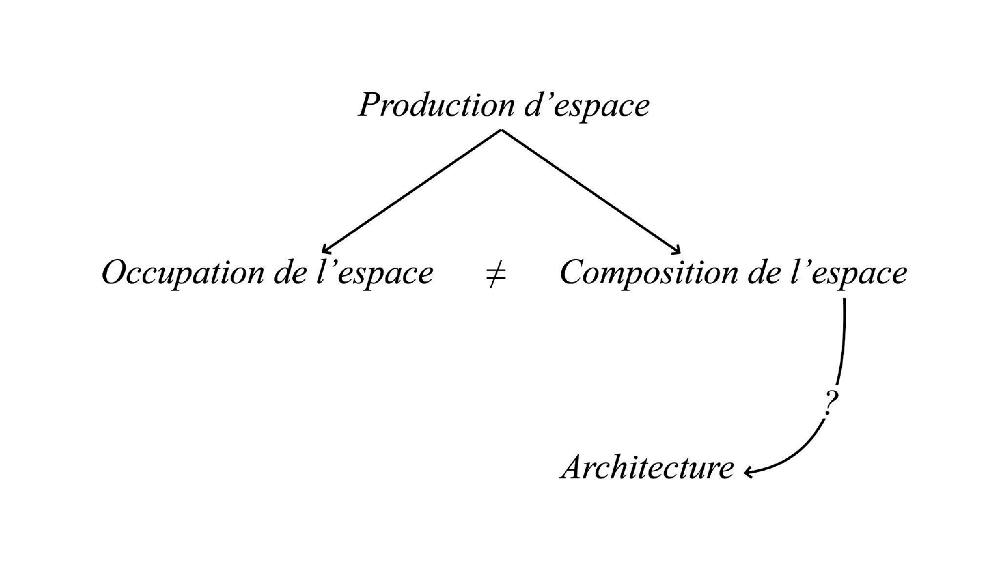

Une discussion
Salma Khobalatte & Benjamin Sauviac
Club ASAP 03
juillet 2024
Temps de lecture : 3 min
« L’architecture est une discipline parce que cette manière de penser, ces réflexes, peuvent s’enseigner et s’enseignent en cours de projet. »
Anna Maria Bordas, “Quelle Autonomie Pour Quelle Architecture.” Exercice(s) d’Architecture 9, 2021
Lorsque nous avons discuté et interrogé la question de savoir si l'architecture est hétéronomiste ou autonomiste, si elle est un champ ou une discipline, notre première opinion commune a été de considérer l’architecture comme hétéronomiste. Cette opinion initiale est devenue notre postulat. A l'instar d'un raisonnement mathématique, nous avons choisi de considérer l'architecture comme hétéronomiste pour examiner ce que cela pourrait impliquer, notamment pour le rôle de l'architecture et de l'architecte.
Si l'architecture est complètement hétéronomiste, quelles en seraient les implications ?
Que devient le rôle de l'architecture et de l'architecte ?
Notre réflexion commence par envisager non pas l’architecture mais plutôt la notion de production d’espace. En effet, il nous semble que si l'architecture est hétéronomiste, cette désignation est plus appropriée. Dans une perspective hétéronomiste, le champ de la production d'espace nous paraît pouvoir se diviser en deux branches : l'occupation de l'espace d'une part, et la composition de l'espace d'autre part. À travers ces considérations, nous proposons d'associer l'architecture à la notion de composition d'espace.

Si l'architecture peut être considérée comme la composition de l'espace, alors elle devient le principe de l'assemblage d'éléments dialoguant entre eux pour former et produire un espace naissant. L'architecture devient ainsi un langage, semblant notamment aboutir à la professionnalisation du champ. En effet, le rôle de l'architecte n'a pas toujours existé ; historiquement, les personnes œuvrant à la production d'espace étaient pluridisciplinaires, corroborant ainsi l'idée que l'architecture est hétéronomiste. Cependant, la professionnalisation du champ, en créant le rôle de l’architecte, semble faire de l'architecture une discipline qui devient alors autonomiste.
L'architecture deviendrait alors le principe de composition et d'assemblage d'éléments dialogant entre eux pour former et produire de l'espace
→
L'architecture est un langage
→
Professionalisation du champ disciplinaire
→
Architecte
→
Architecture autonomiste
Il pourrait alors sembler que tant que le métier d'architecte existe, et tant que l'architecture est conditionnée par la société marchande, elle ne peut réellement être hétéronomiste. Ainsi, pour une composition d'espace totalement hétéronomiste, peut-être devrions-nous supprimer l'architecte, voire l'architecture elle-même ? Pour que l'architecture demeure un assemblage à la fois d'éléments et de disciplines, la notion et l'appellation même d'« architecture » devraient peut-être disparaître. Il semblerait que chercher la définition de l’architecture et du rôle de l’architecte induit l’autonomisme de l’architecture.
Supprimons l'architecte
Supprimons l'architecture
Pour que l'architecture demeure un assemblage à la fois d'éléments et de disciplines, la notion et l'appellation même d'"architecture" se devrait peut être de disparaitre.
Dans ces conditions, la posture de l'anti-architecte pourrait sembler intéressante. À ce sujet, nous pouvons consulter les écrits de Colin Wars, qui décrit et théorise ce que pourrait être l'anti-architecte. Cependant, bien qu'il tente de décrire l'anti-architecte comme autre chose qu'un nouveau rôle de l'architecte, il finit par établir une posture. Cette posture, qui interroge l'architecture et son rôle, paraît constituer tout de même une forme de discipline et donc d'autonomiste.
« Architects, like teachers, are victims of 'role-inflation' and we cannot expect more of them than that they do their job competently, though in the course of doing so they may very well become 'anti-architects' in the same way as some very competent and thoughtful teachers become 'de-schoolers'. »
Colin Ward, "Introduction" to Vandalism, ed. Colin Ward (London, 1974), 14
L'anti-architecte semble constituer une posture qui questionne le rôle et la discipline de l'architecture
→
Architecture autonomiste
À travers ces réflexions, il semble que lorsque l'on questionne le rôle de l'architecture et/ou de l'architecte, on cherche à définir ces notions ; l'architecture devient alors autonomiste. Donc, si l'on peut définir ce qu'est l'architecture, alors elle existe comme une discipline. Par opposition, si l'architecture est hétéronomiste, cela semble impliquer qu'elle ne peut être définie et donc qu'elle n'existe pas, du moins en tant que terme à part entière.
Si on peut définir l'architecture, alors l'architecture existe
→
L4architecture est une discipline
Si l'architecture est hétéronomique, alors on ne peut jamais définir "architecture"
→
L'architecte n'est pas.
Ainsi, en partant du postulat que l'architecture est hétéronomiste, il semble que nous puissions aboutir à la conclusion que l'architecture est autonomiste. Ce paradoxe nous pousse à considérer la définition de l'architecture comme quelque chose de mouvant, d'impalpable, en constante évolution et s'adaptant à son contexte. Par exemple, l'architecture participative, qui semble être une tentative d'introduire l'hétéronomisme dans la conception architecturale, modifie le rôle de l'architecte, qui devient de manière plus élargie médiateur‧rice ou consultant‧e et non plus seulement concepteur‧rice. La définition du rôle de l'architecte et de l'architecture a alors changé, mais demeure tout de même une discipline. En conclusion, il apparaît que considérer l'architecture comme hétéronomiste induit une recherche constante du rôle de l'architecte et de la discipline de l'architecture. Ainsi, l'architecture est autonomiste parce qu'elle est hétéronomiste.
La définition de la discipline architecturale semble être mouvante, impalpable et en constante évolution
→
L'architecture est autonomiste parce qu'elle est hétéronomiste
L'ensemble des articles issus du club asap 03 sont disponibles ci-dessous:
| # | Titre | Auteur | |
|---|---|---|---|
| 300 | Luttes pour et contre l'architecture | Louis Fiolleau | Club #03 |
| 301 | Une discussion | Salma Khobalatte & Benjamin Sauviac |
Club #03 |
| 302 | Economie de l'offre et de la demande | Hugo Forté | Club #03 |
| 303 | Les écoles, fabriques d'hétéronomistes? | Clarisse Protat | Club #03 |